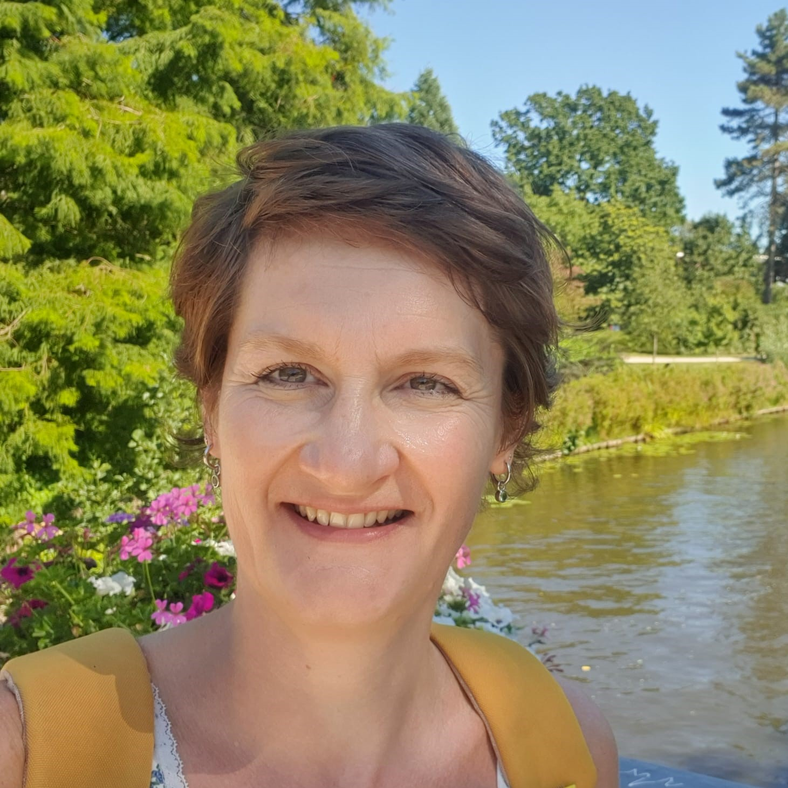

Plenary Lecturers

Acoustics and Wave Physics in Modern Applications of Ultrasound in Therapy
Oleg A. Sapozhnikov
Moscow State University, Russia
University of Washington, USA
Oleg A. Sapozhnikov received his M.S. degree in physics and his Ph.D. and D.Sc. degrees in acoustics from Moscow State University (MSU), Moscow, Russia, in 1985, 1988, and 2008, respectively. He is currently a Professor in the Department of Acoustics, Physics Faculty, MSU. Since 1996 he has also worked at the Applied Physics Laboratory, Center for Industrial and Medical Ultrasound, University of Washington, Seattle, WA, USA. His research interests are physical acoustics, nonlinear wave phenomena, medical ultrasound, including shock wave lithotripsy, high-intensity focused ultrasound, and ultrasound-based imaging. He has been a member of the Board of the International Congress on Ultrasonics since 2009, the Head of the Physical Ultrasound Division of the Scientific Council on Acoustics of the Russian Academy of Sciences since 2009, and a Fellow of the Acoustical Society of America. Dr. Sapozhnikov is one of the first recipients of the Early Career Award of the International Commission for Acoustics (2004).

Inclusive Speech Technology: Developing Automatic Speech Recognition for Everyone
Odette Scharenborg
Delft University of Technology, the Netherlands
Odette Scharenborg is an Associate Professor in the Department of Intelligent Systems, Delft University of Technology, the Netherlands. She is an interdisciplinary researcher on human and automatic speech processing. Her current research focuses on developing inclusive speech technology, i.e., speech technology that works for everyone irrespective of how they speak or the language they speak. Her main interests are automatic speech recognition of diverse types of speech, including child, accented, and pathological speech, and quantifying and mitigating bias in automatic speech recognition. Dr. Scharenborg is the President of the International Speech Communication Association (ISCA). She has served on the ISCA board since 2017, and as Vice President during 2021-2023. During 2018-2022 she was a member of the IEEE SPS Speech and Language Processing Technical Committee, and during 2019-2023 a (Senior) Associate Editor of IEEE Signal Processing Letters. She will be the General Chair of Interspeech Rotterdam, the Netherlands, 2025.